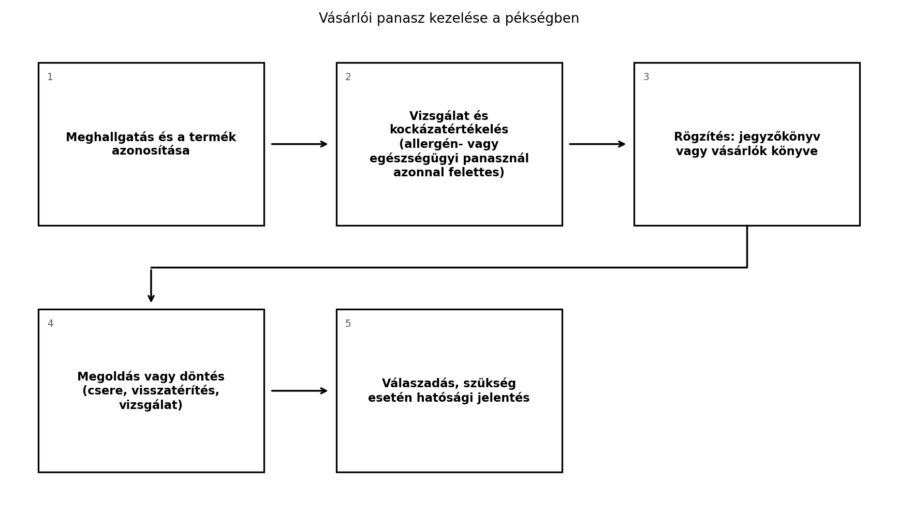

A pékség boltjában a pult mögött dolgozó pék egyszerre élelmiszer-szakember, eladó és pénztáros. A vevő nemcsak kenyeret vesz, hanem bizalmat: elvárja, hogy a termék friss, biztonságos és pontosan tájékoztatott legyen. Ha a pultos udvariatlan, a vásárló elmegy; ha tévesen tájékoztat az allergénről, az egészségügyi kockázatot okozhat; ha hibásan ad vissza, a kassza hiányt mutat. Ebben az alfejezetben a vevőkezelés, a pénzforgalom és a fogyasztóvédelem összekapcsolódó szabályait tanuljuk meg olyan pékségi helyzetekből indulva, amelyek naponta előfordulnak: reggeli csúcs, türelmetlen vásárló, allergénkérdés, kártyás fizetés, panasz a pékáru minőségére.
Továbbvitt eredmény. Az itt tanult vevőkezelési, panaszkezelési, pénzforgalmi és fogyasztóvédelmi ismeretek a Munkajogi alapok és munkaviszony alfejezetben a munkavállalói felelősség, az utasítások követése és a munkahelyi konfliktuskezelés részeként térnek vissza.
Ábrázoljuk a vásárlói panaszok kezelésének lépéseit. A folyamat célja, hogy a vevő panaszát egységesen, nyomon követhetően és a fogyasztói jogokat tiszteletben tartva kezeljük.

A péküzletben dolgozó eladó a kereskedői szerepet is ellátja. Definíció. A kereskedő itt azt a természetes vagy jogi személyt jelenti, aki a pékárut üzletszerűen értékesíti a fogyasztónak. A fogyasztó az a természetes személy, aki a terméket saját háztartása, nem üzletszerű tevékenysége céljából vásárolja.
A kereskedővel szembeni alapvető elvárások:
Hiba. A sikertelenség tipikus okai: a pultos nem ismeri a termékek allergén-összetételét; hosszú sorban türelmetlen a vevőkkel; a kasszát hibásan vezeti; a panaszt elhallgatja vagy vitatkozik; a vásárlók könyvét nem teszi elérhetővé. Mindegyik hiba jogi és üzleti következménnyel jár.
A vevők nem egyformák. A jó pultos felismeri a típust, és aszerint kommunikál.
| Vevőtípus | Jellemző viselkedés | Kezelési stratégia |
|---|---|---|
| Siető vevő | Rohan, rövid kérdéseket tesz fel, türelmetlen | Gyors kiszolgálás, pontos összeg kérése, ne húzza az időt |
| Bizonytalan vevő | Nem tudja, mit vegyen, sokat kérdez | Türelmes tájékoztatás, ajánlás, összetétel- és allergéninformáció |
| Allergiás vagy diétázó vevő | Kifejezetten kérdezi az allergéneket, jelölési infót | Határozott, pontos válasz; ha nem tudja, nézze meg a gyártmánylapot, ne találgasson |
| Rendszeres vevő | Ismeri a termékeket, elvárja a megszokott minőséget | Udvarias köszöntés, gyors kiszolgálás, a törzsvásárlói igények figyelése |
| Turista vagy alkalmi vevő | Idegen nyelv, helyi termékeket keres | Egyszerű, jól érthető tájékoztatás; szükség esetén a termékfelirat mutatása |
| Nagyobb megrendelő | Rendezvényre, céghez rendel, mennyiséget, határidőt kérdez | Pontos ár, kapacitás ellenőrzése, írásbeli visszaigazolás, előleg/számla egyeztetése |
Megjegyzés. A táblázat tanulási példa; a konkrét protokoll az üzlet belső eladási útmutatójától függ.
A pékségi értékesítés leggyakoribb pénzügyi művelete a készpénzes és a kártyás fizetés, ritkábban az átutalás nagyobb megrendeléseknél.
Definíció. Készpénzfizetés az a fizetési mód, amikor a vevő bankjegyet vagy érmét ad át. Kártyás fizetés esetén a vásárló bankkártyájával a POS-terminálon keresztül, elektronikusan egyenlíti ki az árat. Átutalás esetén a vevő bankszámláról utalja a pénzt az eladó számlájára, jellemzően előzetes megrendelésnél vagy céges vásárlásnál.
Szabály. A péküzletben minden értékesítésről nyugtát vagy számlát kell adni. A nyugta a fogyasztónak történő értékesítésről, a fizetési módtól (készpénz, kártya) függetlenül kiállított adóügyi bizonylat; jellemzően az online pénztárgép állítja ki. A számla adóügyi bizonylat, amely a termékértékesítésről és az adóról szól. A kiskereskedelmi gyakorlatban a nyugta a leggyakoribb; a vevő kérésére számlát kell kiállítani, amennyiben a vállalkozásnak erre kötelezettsége van (ellenőrizendő: az adóügyi bizonylatokra vonatkozó hatályos NAV-előírások és a nyugta-/számlaadás feltételei).
HACCP. A készpénz- és kártya-terminál kezelése után a pultos keze szennyeződhet. Ha ezután pékáruhoz ér, a kezet fertőtleníteni kell, vagy fogót/csipeszt kell használni. A pénz és az élelmiszer kezelésének elkülönítése GHP-követelmény; a konkrét higiéniai lépéseket az üzemi HACCP-terv rögzíti (ellenőrizendő: a pékség GHP/HACCP-terve).
Definíció. A kassza zárás a napi (vagy műszakonkénti) pénzforgalom ellenőrzése, amikor a készpénz és kártyás bevételt összevetik a rögzített tételekkel.
Példa. A kassza nyitó egyenlege 20 000 Ft. A nap folyamán készpénzes bevétel 185 000 Ft, kártyás bevétel 96 000 Ft. Készpénzes visszaváltás nem volt. A záró készpénznek 20 000 Ft + 185 000 Ft = 205 000 Ft-nak kell lennie. A teljes napi bevétel 205 000 Ft – 20 000 Ft + 96 000 Ft = 281 000 Ft. Ha a tényleges készpénz 204 500 Ft, akkor 500 Ft hiány van, amelyet ki kell vizsgálni.
Nagyobb megrendelésnél (például esküvői kenyér, céges szendvicsek) a vevő gyakran átutalással fizet. Ilyenkor előleg vagy teljes összeg utalása után az eladó számlát állít ki, és a teljesítést, illetve a szállítást a számlán rögzíti. A péknek meg kell győződnie arról, hogy a megrendelés és a fizetés egyezik, mielőtt kiadja a terméket. Az átutalásos megrendelésnél a vevő adatait és a teljesítés időpontját írásban rögzíteni kell.
Figyelem. A pénzkezelés és a nyugtaadás szabályait az adóhatósági és számviteli előírások szabályozzák; az aktuális követelményeket (online pénztárgép, adatszolgáltatás, nyugtakiállítás) kiadás előtt ellenőrizni kell.
A fogyasztóvédelem a vevők jogainak védelmét szolgálja. A pékségben három fő terület kapcsolódik ide:
Definíció. A vásárlók könyve az üzletben elérhető, a fogyasztói észrevételek és panaszok rögzítésére szolgáló dokumentum. A vevő ebbe írhatja a panaszt vagy észrevételt, és az üzemeltetőnek meghatározott módon kell megválaszolnia (ellenőrizendő: a vásárlók könyvét szabályozó kormányrendelet és a válaszadási határidő).
Szabály. A vásárlók könyvét jól látható, a vevők által könnyen elérhető helyen kell tartani, például a pénztárgép mellett. A pultosnak tudnia kell, hol van, és a vevő kérésére át kell adni. A bejegyzést nem lehet kitépni, elrejteni vagy a vevőtől megtagadni.
Az alábbi eljárás a pultban dolgozó pék számára készült, és a vásárlói panaszok egységes kezelését segíti.
HACCP. Az allergénre vonatkozó panasz kritikus jelzés lehet: ha a termék tévesen nem tartalmazta a megfelelő allergén-jelölést, vagy keresztszennyeződés gyanúja merül fel, a tételt vissza kell tartani, és a felelősnek értékelnie kell, hogy szükséges-e hatósági bejelentés. A panaszbejegyzést a HACCP-rendszerben nyomon kell követni (ellenőrizendő: az üzemi HACCP-terv és a NÉBIH útmutatója).
Allergén. A pultnál történő allergén-tájékoztatás élelmiszer-biztonsági feladat. A nem előre csomagolt pékáruról az 1169/2011/EU rendelet szerint az allergén-összetevőkről tájékoztatni kell a fogyasztót (ellenőrizendő: a nem előrecsomagolt élelmiszerek allergén-tájékoztatására vonatkozó magyar végrehajtási rendelet pontos előírása. Ilyen lehet a 36/2014. (XII. 17.) FM rendelet, de hatályossága ellenőrizendő). A pultosnak nem szabad találgatnia; ha nem tudja pontosan, keresse meg a termék gyártmánylapját vagy az allergénmátrixot, ahogy az Allergének kezelése a pékségben alfejezetben tanultuk.
Definíció. A fogyasztói érdekvédelem az a jogterület és intézményrendszer, amely a fogyasztók és a vállalkozások közötti egyenlőtlen helyzetet kiegyenlíti. Része a fogyasztóvédelemről szóló törvény (ellenőrizendő: pontos törvényszám és hatályos szöveg) és az annak végrehajtására kiadott rendeletek. Élelmiszer-biztonsági ügyekben a NÉBIH jár el; a kereskedelmi szabályok és a vásárlók könyve a fogyasztóvédelmi hatóság felügyelete alá tartozik.
Valós eset. Egy hétvégi műszakban a pultoshoz egy vásárló lép, és mérgesen közli, hogy a reggel vásárolt „gluténmentes” zsemle elfogyasztása után hasi görcse lett, és a csomagoláson nem látta a gluténmentes jelölést. A pultos először vitatkozni kezd, hogy „a zsemle biztos, hogy gluténmentes”. A vevő panaszt tesz, és bejegyzést ír a vásárlók könyvébe. A műszakvezető átvizsgálja a gyártmánylapot, és kiderül, hogy a zsemle valójában hagyományos búzalisztből készült; a pultos a reggeli műszakban tévesen, saját feltételezésből adott tájékoztatást. Először megkérdezték a vevő állapotát, és javasolták az orvosi ellátást (súlyos tünetnél mentőt hívtak volna, 112). A pult gluténmentes jelöléseit és az eladói tájékoztatót azonnal ellenőrizték, a téves „gluténmentes” tájékoztatást megszüntették, a vásárlót elnézéskéréssel értesítették, és a személyzetet újra oktatták az allergén-tájékoztatásról. A belső panaszfelvételi lap és a vásárlók könyve bejegyzés rögzíti a hibát és a helyesbítést. Tanulság: a pultban az allergén-tájékoztatás nem udvariassági kérdés, hanem élelmiszer-biztonsági kötelezettség; aki nem tudja, hallgasson, és nézzen utána.
A vevőkezelés és a pénzforgalom minősége mérhető:
1. feladat (A) Sorolja fel a kereskedővel szembeni öt alapvető elvárást, és mondjon mindegyikre egy-egy pultbeli példát!
2. feladat (A) Számolja ki a kassza napi egyenlegét: nyitó készpénz 25 000 Ft, készpénzes tételek összege 210 000 Ft, kártyás tételek összege 96 500 Ft, visszaváltás 12 000 Ft. A tényleges záró készpénz 223 500 Ft. Hány forint az eltérés, és hiány vagy többlet?
3. feladat (B) Párosítsa a vevőtípust a megfelelő kezeléssel! Vevőtípus: siető, bizonytalan, allergiás, nagyobb megrendelő. Kezelés: (a) írásbeli visszaigazolás és előleg egyeztetése; (b) pontos, adatlapra támaszkodó allergén-tájékoztatás; (c) gyors kiszolgálás, pontos végösszeg; (d) türelmes termékajánlás.
4. feladat (B) Írja be a helyes sorrendbe a panaszkezelés lépéseit: megoldás felajánlása, meghallgatás, vizsgálat, bejegyzés, felettes értesítése, válaszadás.
5. feladat (C) Egy vevő azt állítja, hogy a pultban kapott tájékoztatás szerint „tejmentes” kifli fogyasztása után viszketni kezdett a bőre. A gyártmánylap szerint a kifli sovány tejport tartalmaz. Elemezze a hibát: mi történt, mi a lehetséges következmény, és mi a helyes lépéssor?
6. feladat (D) Tervezzen meg egy rövid pultbeli allergén-tájékoztatási próbavásárlást! Határozza meg a vevő kérdését, a pultos elvárt válaszát, az ellenőrzési pontot és a dokumentálás módját!
Önellenőrzés – válaszok
1. feladat (A) megoldása
Öt alapvető elvárás példákkal: (1) Ár- és tömegszerűség: a 0,5 kg névleges tömegű kenyér legalább annyi legyen. (2) Tájékoztatási pontosság: a pultos pontosan megmondja az allergént. (3) Udvariasság: köszönés, türelem a csúcsban. (4) Nyomonkövethetőség: a pultos tudja, melyik tételből való a termék. (5) Élelmiszer-biztonság: a pultos nem nyúl pénz után pékáruhoz kézmosás nélkül.
2. feladat (A) megoldása
Adott: nyitó készpénz 25 000 Ft, készpénzes tételek 210 000 Ft, kártyás 96 500 Ft, visszaváltás 12 000 Ft. Keresett: elvárt záró készpénz és eltérés.
Képlet: záró készpénz = nyitó + készpénzbevétel – készpénzkifizetés = 25 000 Ft + 210 000 Ft – 12 000 Ft = 223 000 Ft.
Tényleges záró készpénz 223 500 Ft. Eltérés = tényleges – elvárt = 223 500 Ft – 223 000 Ft = +500 Ft, azaz 500 Ft többlet. Ellenőrzés: a többlet kassza eltérést jelent, amelyet ugyanúgy ki kell vizsgálni, mint a hiányt.
3. feladat (B) megoldása
Siető → (c) gyors kiszolgálás, pontos végösszeg. Bizonytalan → (d) türelmes termékajánlás. Allergiás → (b) pontos, adatlapra támaszkodó allergén-tájékoztatás. Nagyobb megrendelő → (a) írásbeli visszaigazolás és előleg egyeztetése.
4. feladat (B) megoldása
Helyes sorrend: (1) meghallgatás, (2) vizsgálat (kockázatértékeléssel), (3) bejegyzés, (4) felettes értesítése (allergén- vagy egészségügyi panasznál azonnal, a megoldás előtt), (5) megoldás felajánlása, (6) válaszadás; a válaszadás a végén van.
5. feladat (C) megoldása
Hiba: a pultos tévesen „tejmentesként” tájékoztatta a vevőt, pedig a kifli sovány tejport tartalmazott. Következmény: a tejfehérjére érzékeny fogyasztónál allergiás tünet (bőrviszketés) jelentkezett; a vállalkozás hibás teljesítésért felel, és hatósági eljárás indulhat. Helyes lépéssor: (0) a vevő állapotának felmérése, szükség esetén mentőhívás (112) vagy orvosi ellátás javaslata, (1) a vevő panaszát azonnal rögzíteni, (2) a terméket és a gyártmánylapot ellenőrizni, (3) az érintett tételt a pultból kivonni, (4) a vevőt tájékoztatni az eredményről, (5) a hibát a vásárlók könyvében vagy belső panaszlapon dokumentálni, (6) a személyzetet újra oktatni az allergénmátrix használatáról, (7) szükség esetén a hatóságot értesíteni.
6. feladat (D) megoldása
Próbavásárlás tervezete: a vevő (ellenőr) azt kérdezi: „Ez a szezámmagos rúd tartalmaz-e dióféléket?” A pultos elvárt válasza: a gyártmánylap vagy allergénmátrix alapján pontosan megmondja, hogy a termék dióféléket nem tartalmaz, de szezámmagot igen; ha bizonytalan, ellenőrzi a dokumentumot. Ellenőrzési pont: a pultos azonnal hozzáfér-e az allergénmátrixhoz, és a válasz összhangban van-e a termékleírással. Dokumentálás: próbavásárlási jegyzőkönyv, benne a kérdés, a válasz, az ellenőrzés dátuma és a javító intézkedés, ha hiba volt.
A péküzletben a vevőkezelés és a pénzforgalom a termékbiztonság és a fogyasztóvédelem része. A kereskedővel szembeni alapelvárás az ár- és tömegszerűség, a pontos tájékoztatás, az udvariasság, a nyomonkövethetőség és az élelmiszer-biztonság. A vevőtípusok kezelése eltérő kommunikációt igényel: a siető vevő gyors kiszolgálást, az allergiás vevő pontos adatlap-alapú tájékoztatást, a nagyobb megrendelő írásbeli visszaigazolást. A pénzforgalomban a készpénzes fizetésnél a visszajárót hangosan kell bemondani, a kártyás fizetésnél a PIN kódot a vevő maga adja meg, a pultos soha nem kérheti el. Minden értékesítésről nyugtát vagy számlát kell adni. A vásárlók könyvét jól látható helyen kell tartani, a panaszokat rögzíteni kell, és a vevőt érdemi válasszal kell tájékoztatni. Az allergén-tájékoztatás a pultban élelmiszer-biztonsági feladat; a pultos nem találgathat, hanem a gyártmánylapra vagy az allergénmátrixra támaszkodik, ahogy az Allergének kezelése a pékségben és a Termékjelölés és fogyasztói tájékoztatás alfejezetekben tanultuk. Továbbvitt eredmény. Az itt tanult vevőkezelési, panaszkezelési, pénzforgalmi és fogyasztóvédelmi ismeretek a Munkajogi alapok és munkaviszony alfejezetben a munkavállalói felelősség, az utasítások követése és a munkahelyi konfliktuskezelés részeként hasznosulnak.